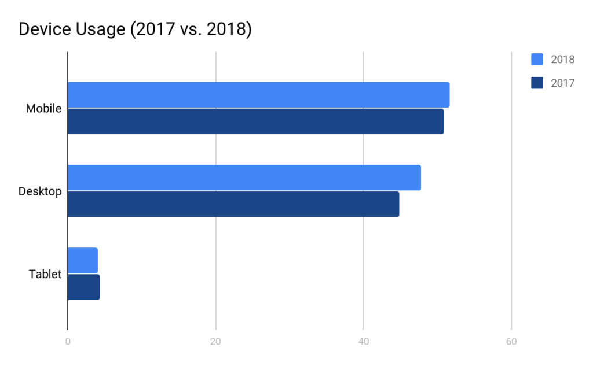
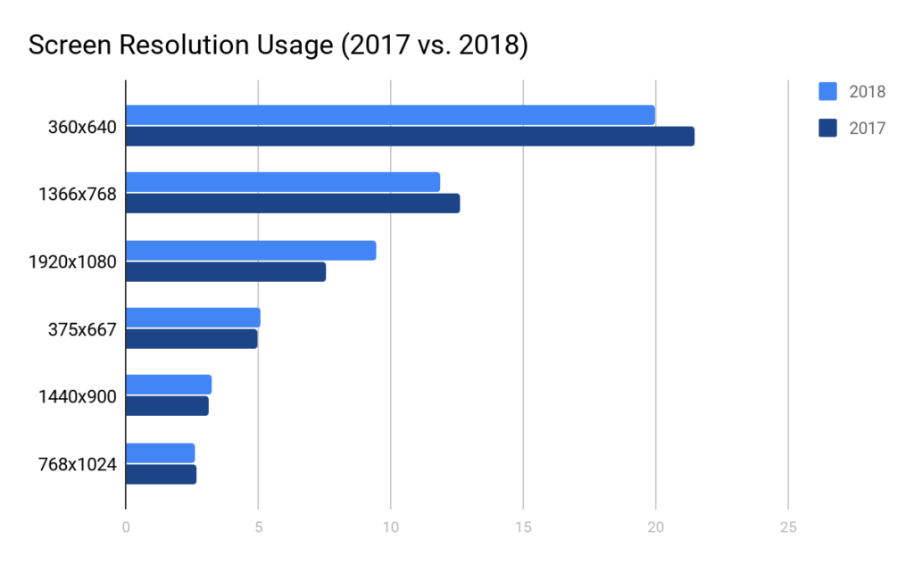

In this erratic world of technology, the way a person access the information through a device is the most volatile thing to predict. Along with the device so many aspects change. These may include factors like the operating system used by the device, applications or web browsers used to access the information or screen size and many more. One of the major feature that influence the end user is how they see it, in other words the screen plays a major role in how they perceive the information. The variation of screen sizes ranging from size of a watch to a large QHD multi display screens, responsive responsive design for web content is not only just a nice feature to consider but also it has become a necessity. According to Howard, Daniel, and Jonas Strandell(2019), “Mobile devices are still the primary portal to the internet, and increasing. Mobile devices sustained a seven-point lead over desktops for almost the entire year (in 2018 compared to 2017)”
Howard, Daniel, and Jonas Strandell. “2018 – Pingdom Year in Review.”
This trend continued into 2019, leading to The big three:
Besides, our design and developing team will consider the different factors that are used by the web-browsers to render content in different ways. That is why the website will be tested and guaranteed to work in statistically most used browsers.
The most used top 3 browsers in user are as follows:
The websites are kept to test using strategically developed methods to make sure of their compatibility. So, having a responsive design will bring a special ability to the interface. To start with responsive design provides the ability to display interface as intended by the desiner or owner of the interface regardless of the window or screen size. This could be achieved by considering the most popular screen sizes (as shown in graphsabove) while the plan is still in a design stage. A responsive web site will eliminate the hassel and need for horizontal scroll, since the display properties of content will be designed and coded to automatically adjust to the size of the screen or window. This will eliminate the problem of content being “too big”or “too small” for a given screen size. And finally, the responsiveness of the website refers to the content that is displayed while viewed on different devices. Based on the screen size restrictions of mobile users, and the way users interactwith the interface of the website, it is necessary to have different ways to display content.